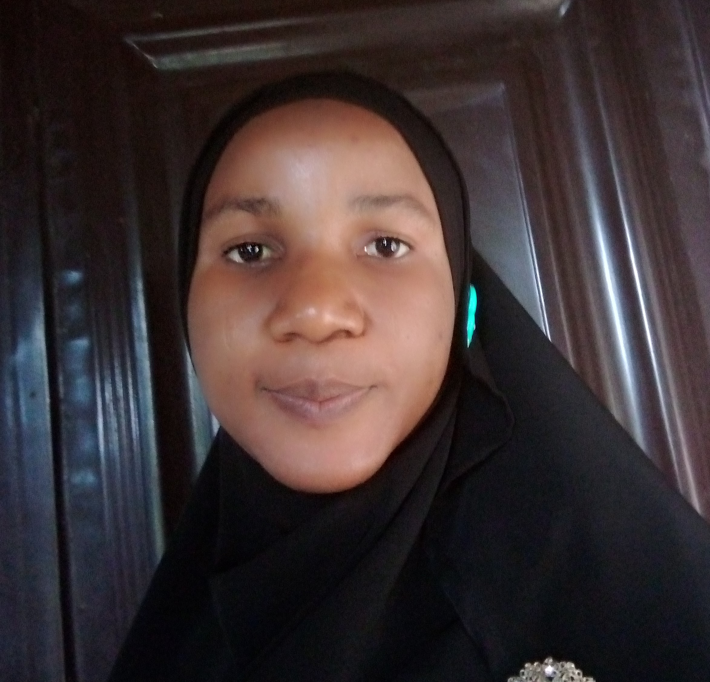

My Profile
Hello! I'm Ajoke Abdulrasaq, a Data Analyst and Developer. I love working with data to extract insights and build applications that make a difference.
My Skills
- Data Analysis
- Web Development
My Education
OLABISI ONABANJO UNIVERSITY
B.Sc Computer Engr.(First Class Honor)
2011 - 2016
My Experience
- MOGEAD INTEGRATED SERVICES
(Data analyst) - AMBROSE ALLI UNIVERSITY
(ICT staff)